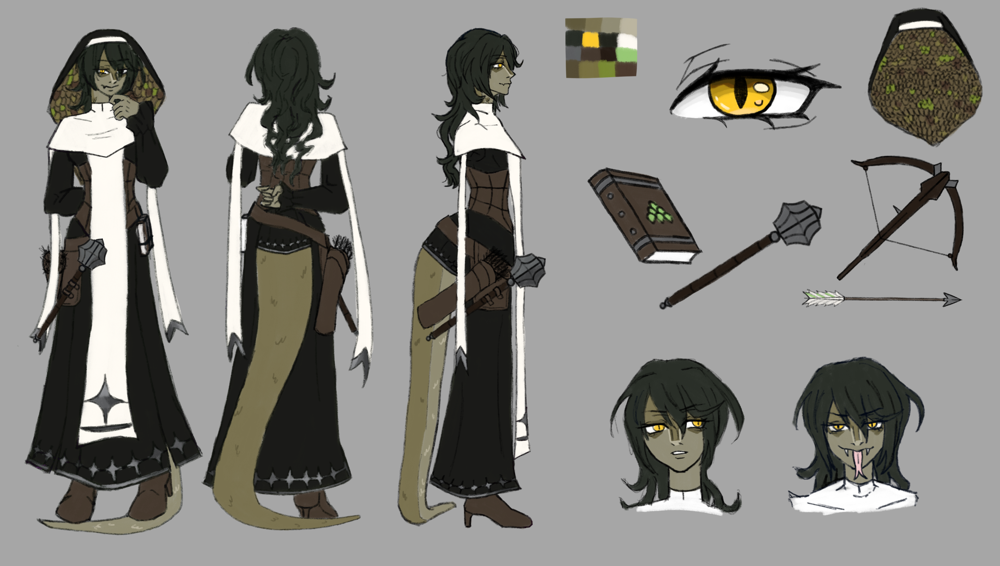

1 / 3
Images all have a form of data in text, and accessing this text allows you to change what the image looks like. This addition or subtraction of text would "glitch" the image, which had an unpredictable effect on the images. This would end with the images all having unique edits. I wanted each image to have a different effect on them through trial and error. I wanted to use flowers as part of an experimental piece, taking something delicate and gentle and using an unpredictable process to “ruin” them.

Using my favorite image of the three, I used Photoshop to edit and change the photo into an album cover. It’s a cover for a band and song that I personally enjoy, and having such a beautiful glitch be the representation of such a soft and lovely song felt strong and personal to me.


1 / 2
Using Adobe Illustrate, I created vector artwork with a plush I had on my desk as my subject. After having the vector art completed, I took the artwork and turned it into an editable sticker. I Photoshopped the sticker onto a photo I took outside of a 7Eleven. The angle of the image, as well as the overall vibe felt like there could be a collection of stickers right next to the sign, like it was missing some sort of graffiti.


1 / 2
I took a pen drawing of a bat that I had done previously, and decided to turn it into a character design and full illustration. Character design and digital illustrations like this are where I truly shine, as I do it for a hobby. I loved designing this character, keeping it simple but original. Using the inspiration from one of my favorite animals, a painted bat, I wanted to convey a similarity between the two. Using colors I rarely use as well, it was a challenging but creative process.


This character was designed for a Dungeons and Dragons session. it features a 360 of the character, as well as various items and expressions. She holds snake like visuals and physical aspects. The design was inspired by fantasy clerics, and the shape of the hood is to mimic king cobras.


A personal project where I had an idea of using a crab as my main inspiration for a character. I pulled inspiration off of Gyaru, a Japaese fashion subculture that is defined by the makeup, clothes, and accessories.


1 / 2
a set of illustrations that were done with original characters. They are part of a larger set of about 20 illustrations.